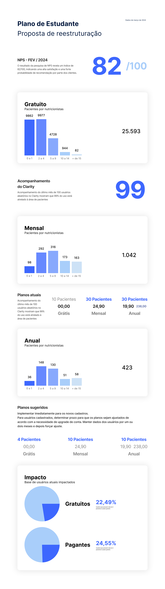

More focus.
Fewer features.
Students were signing up, but adoption remained low. I led the research that challenged a brief for more features and made the case for a smaller, better experience.
The project started with a familiar ambition: give students more reasons to use the product. The research led us to reconsider how much we were asking them to use.
Dietbox’s Student Plan introduced future nutrition professionals to software they could continue using throughout their careers. The business wanted to attract more students and encourage their eventual move to a professional subscription.
High sign-up interest had not translated into sustained use. Some accounts never registered a patient or an appointment. Before deciding what to add, I needed to understand what role Dietbox actually played during a nutrition degree.
Making the assumptions visible
I led a discovery around students’ routines, study habits, perceptions of the plan and reasons for leaving. A matrix of known facts, assumptions and open questions helped us examine ideas already on the table: more Academy content, gamification, and different restrictions between free and paid plans.
We combined what students said with what they did, then checked both against subscription rules and database records.
- 30
- survey responses
- 100
- profiles reviewed in Clarity
- 5
- student interviews & usability sessions
Interviews spanned students from their third to final semester. We also spoke with a nutrition lecturer, reviewed cancellation information with Customer Experience, and compared the features and rules across student and professional plans.
That combination mattered. Requests for features could tell us what sounded valuable; observation could show us where value was already being found—or missed.
Positive feedback, concentrated use
Survey respondents were satisfied with Dietbox and often requested more specialised educational content. The research materials also reported a February NPS of 82. Those were positive signals, but they did not explain the adoption gap.
The behavioural review pointed in a much narrower direction: 99% of the users analysed used only patient-related features. Meal plans, medical history, patient information, dietary recalls and diaries dominated the observed use.
Students were using the product to practise the work they were learning to do. That became the strongest basis for deciding where to focus.
The opportunity was to reduce the feature set and make the essential workflows more useful, understandable and easier to discover.
Students needed practice—and time
The interviews gave that behaviour context. Students wanted more practical preparation: working through clinical cases, performing assessments and feeling ready for consultations. At the same time, they were balancing classes, placements and, in some cases, full-time work.
One participant watched educational videos while doing cardio because it was an available window in an already crowded routine. Others relied heavily on lecturers’ slides, university materials and summaries.
The lecturer’s perspective added a question of timing. The need for deeper professional knowledge could become more pressing after graduation, while students were already carrying a substantial academic workload.
There was interest in learning, but its usefulness depended on context. A clinical case, visual reference or explanation available during a practical task could have a clearer purpose than another destination competing for study time.
The value was there. Finding it was harder.
During usability sessions, students often reacted positively to existing capabilities they had not known about. The product already offered useful tools, but its interface did not consistently help students discover or understand them.
We uncovered a problem in password recovery, confusing inputs, missed meal controls, and labels that looked clickable but were not. One participant initially understood the patient diary as a place for their own notes. Another appreciated the onboarding explanation but said they probably would not have read it without us present.
Academy showed a similar pattern. Some participants valued its clinical cases and study materials; others did not know what it offered. Search and content presentation also needed attention.
These findings connected the strategic recommendation to concrete work: improve return access, explain tools in context, clarify controls, and guide students through their first patient record. Encouraging students to add themselves as a practice patient was one proposed way to make that first experience tangible.
A plan larger than the observed need
The database analysis reinforced the need for focus. Most free accounts had only a handful of patient records, while the paid plan offered capacity for 30 patients that relatively few students used.
no more than four patients77.5%
My recommendation brought two related decisions together: reduce the student feature set around relevant activities, and align subscription capacity more closely with observed use.
| Student plan | Existing | Proposed |
|---|---|---|
| Free | 10 patients | 4 |
| Paid | 30 patients | 10 |
The proposal estimated that 22.49% of free users and 24.55% of paid users exceeded the suggested limits. Those were estimates of the population potentially affected, rather than forecasts of upgrades. It distinguished new registrations from existing accounts and included a transition period for current users.
View the original restructuring proposal

Graduation needed a journey of its own
The research exposed another gap in the business objective. Under the rules we reviewed, free student accounts became free professional accounts when the graduation date passed, without a dedicated communication journey. Paid student subscriptions were deactivated.
We identified opportunities to prepare students for that transition: communication before graduation, relevant educational support, and a clearer path into professional plans. Connections with universities and lecturers also mattered, since several participants had first encountered Dietbox in class.
Cancellation data left questions open. Categories such as personal reasons, occasional use and “student” suggested possible links to temporary academic needs, but the responses were too broad to establish why students left. Improving how CX collected those reasons remained part of the research follow-up.
Changing what we chose to build
The discovery redirected a brief for more features toward a more focused student experience: fewer capabilities, stronger patient workflows, clearer onboarding, and a more deliberate transition into professional practice.
The outcome documented here is a change in product direction and a restructuring proposal. The project materials do not include post-launch adoption, retention or conversion results.
My contribution was to connect the behavioural evidence, students’ circumstances and the business model into a direction we could act on. The research made reducing scope a supported product decision.